qProf help
vers. 0.5.1
Plugin creators: M. Alberti and M. Zanieri.
The original concept is by M. Zanieri, while the implementation is by M. Alberti.
A few people contributed with suggestions and testing. Among them we want to thank S. Peduzzi.
The purpose of this QGIS plugin is to help in the creation of geological profiles. Georeferenced data describing topography,
geological outcrops and attitudes can be used as source data.
Since vers. 0.3.4 it allows to create multiple topographic profiles at ones (currently only when the source profiles are derived
from a line layer; moreover geological data can be plotted on multiple profiles, only on single line profiles).
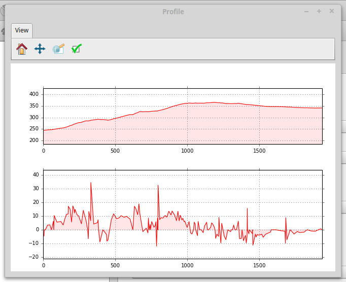
Fig. 1. Example of a topographic profile comprising directional slopes, created from a GPX file
(data courtesy of S. Peduzzi).
Note that currently qProf allows to project/intersect geological data (attitudes, outcrops,
lineaments or faults) only when the profile is constituted by a straight line, with just an
initial and a final point. Due to this constrain, GPX file input, generally comprising multiple
points, or profile lines with more than two points can be used for constructing topographic profiles
but not for geological data projection and intersections.
This constraint will be relaxed as much as possible in future versions.
A few posts describing the plugin are:
1. General workflow
To construct a geological profile with qProf, the first step is to create a topographic profile, where the input data are
represented by one or more DEMs, or alternatively by a GPX file.
Afterwards, the user can add to the topographic profile geological data but
only for profiles created using a line made up by two points. Geological data can be projected on the profile (e.g., geological attitudes or traces) or can intersect the profile (e.g., faults, geological outcrops).
Geological data are provided in point, line or polygon layers. Geological attributes are stored in the attribute tables.
In details, these processings can be:
- the projection of geological attitudes on the profile section;
- the projection of geological lines;
- the intersection of geological lines (e.g., faults) on the profile section;
- the intersection of geological polygonal elements (e.g., outcrops) on the profile section.
The last step consists in exporting created datasets as graphics or GIS data, for further elaborations via graphic or geological software.
2. Topographic profile creation
It is possible to create a topographic profile, by first defining its source.
After the profile definition, its statistics are calculated ("Profile statistics" section) and then the profile can be visualised ("Profile plot" section).
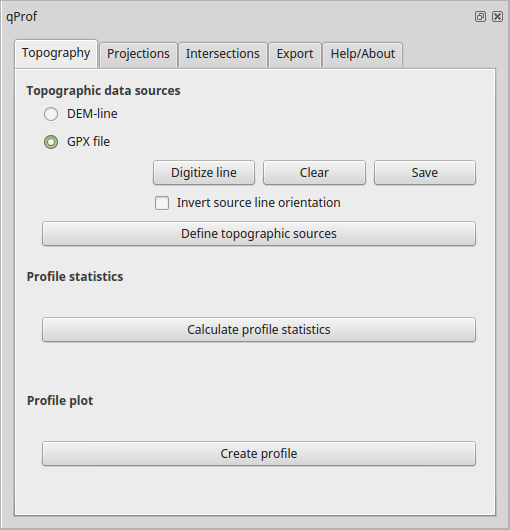
Fig. 2. The plugin interface for topographic profile creation from DEMs or GPX files.
2.1 Definition of topographic data sources
Elevation data sources may derive from:
- one or more DEMs, sampled along one or more profile lines;
- a GPX file storing track points.
The orientation of the profile, be it from DEMs or from a GPX file, can be reversed by checking the "
Invert orientation" checkbox: the start will become the end and vice versa.
2.1.1 Topographic profile creation from DEM(s) and line traces
A topographic profile can be extracted from one or more DEMs.
The profile lines can derive from:
- a canvas-digitized line: only single-line profiles
- a line layer: single- or multiple-line profiles
- a list of points: only single-line profiles
The created profile will be created using the assigned project CRS if defined. Otherwise the user will have to manually set the CRS (after exporting and loading the profile as a new GIS layer).
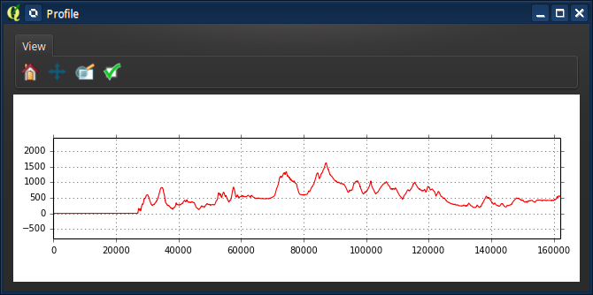
Fig. 3. Example of a single topographic profile.
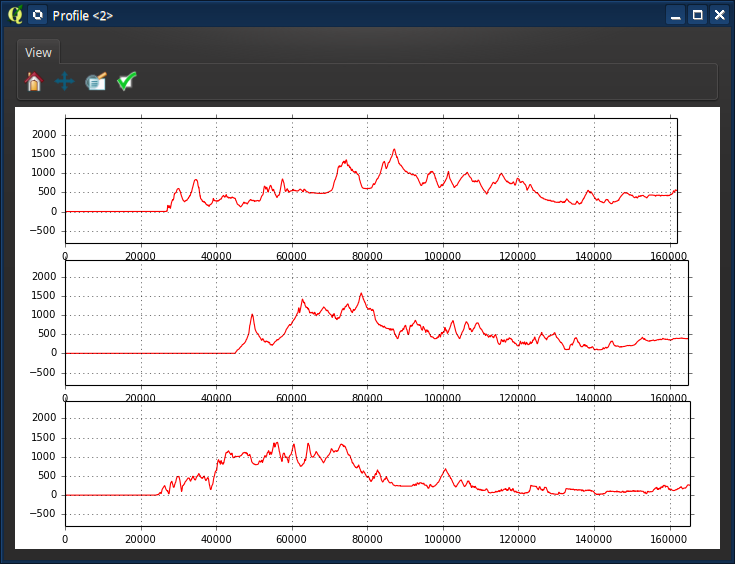
Fig. 4. Example of multiple topographic profiles.
2.1.1.1 Profile line digitized in the canvas
A profile line may be digitised directy in the map canvas by using the "Digitize line" button. After activating the button, you add a point with a left click, and terminate the line with a right click.
It is possible to delete the digitized line by cliking the "Clear" button. With the "Save" button it is possible to save the line as a shapefile and add it to the project.
2.1.1.2 Single or multiple lines stored in a layer
When using a line layer, all its elements will be used, unless there are selected lines.
If the "Layer with multiple profiles" option is checked, each line will be considered to constitute an individual profile.
The name of each profile (to be used in the data export) will be extracted from the field optionally defined as "label field".
The plot order for these individual profiles can be set using the "Line order field" option,
otherwise profiles will be plot in the order in which they are found in the attribute table.
When the "Layer with multiple profiles" option is not checked and there is more than one line in the layer, these lines will be
merged into a single one, eventually using, if defined, the order stored in the "Line order field" optional field (integer field with order values starting from 1).
Otherwise, the internal line order in the layer would be used, but since sometimes errors in the profile sequence are observed due
to an incorrect line sequencing in the attribute table of the layer, this problem could be fixed by setting a correct line order in the line order field.
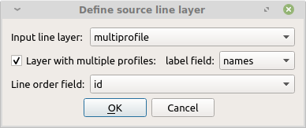
Fig. 5. Definition of lines as single or multiple profiles.
2.1.1.3 Line from numeric input
It is also possible to define the source profile as a list of point coordinates, in the used CRS of the project, if set, or of the used datasets.
Each point is defined by a x-y coordinates pair, comma-separated, on a single row, for instance:
549242.7, 242942.2
578370.3, 322634.5
2.1.1.4 Definition of input DEMs
By clicking on "Define source DEMs" the user can choose which of the loaded DEMs, one or more, to use.
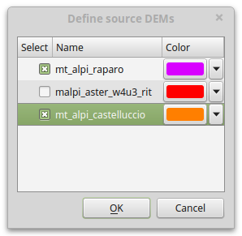
Fig. 6. Definition of source DEMs.
2.1.1.5 Definition of line densify distance
This is the spacing between line points, automatically added for densifying the segments. Original points are preserved and maintaned in the resulting densified line. A suggested value is automatically calculated, based on the highest resolution DEM cell size. It is advisable to use a value comparable to the resolution of the used DEM, for instance 30 m for Aster DEMs.
2.1.2 Topographic profile creation from GPX
Topographic profiles can be created also using a GPX file as a source. The original latitude-longitude values are automatically converted to a WGS84-based cartesian metric values, and from those values the topographic profile is constructed.
Beware that in the current version, only profile lines with just two points (start and end points) may be used for further geological data projections and intersections. So if you just want to create a topographic profile, GPX profile sources are fine.
2.2 Profile statistics
The elevation statistics along the profile for each chosen DEM may be calculate with the "Calculate profile statistics" button. Statistics are subdivided by profile and DEM.
These statistics can be used as a help in the definition of the profile plot minimum and maximum elevations ("plot z min value"
and "plot z max value" options). Otherwise, automatic values will be applied.
2.3 Profile plot
The profile plot is created by using the "Create topographic profile" button.
Values for the vertical exaggeration and minimum and maximum elevation in the plot are precomputed, however the user may modify them.
Both height and slope can be plotted. Slopes are in degrees, and can be computed a absolute or direction values. When directional, positive values indicate upslope segments in the profile direction, while negative values indicate downslope segments.
Within the window activated by the "Elevation layer visibility and colors" button it is possible to define the colors, as well as the visibilities, of the distinct elevation layers sources.
With the option "Flip x-axis direction", the start of the x-axis in the plot will be at the right, not at the left, so that distances will increase from left to right.
Sometimes the plot creation may require more than just a few
seconds, so please be patient... ;)
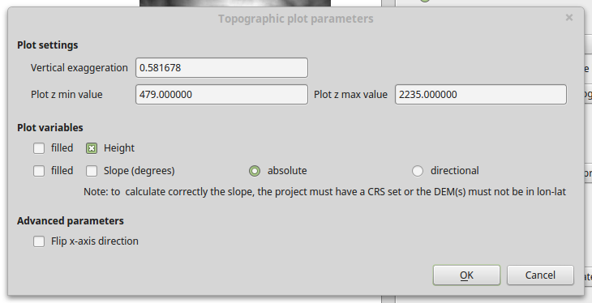
Fig. 7. The window for the definition of the plot parameters.
3. Geological element projections on the profile
Having already created a topographic profile as previously described,
it is then possible to perform on the same profile the projection of geological attitudes or traces.
3.1 Projection of geological attitudes
The source for geological attitudes is a point layer. Only selected points will be projected, unless,
in case of no point selection, all layer points will be projected.
Required fields are the geological point id and its surface orientation, expressed by dip direction or right hand rule (RHR) strike and dip angle values.
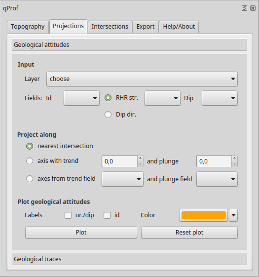
Fig. 8. The plugin interface for geological attitude projections on the profile.
The geological attitudes can be projected on the section plane according to three methods:
- nearest intersection: data are projected perpendicular to the profile line
- projection along a common axis, defined through its trend and plunge: the projection axis for all data is the same
- projection along individual axes for each geological record, defined in the trend and plunge fields
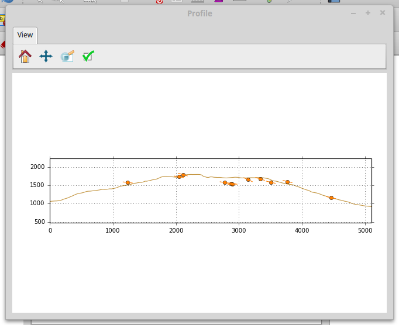
Fig. 9. Example of geological attitudes projection along a profile in the eastern sector of Mt. Alpi zone (Basilicata, Southern Italy).
3.2 Projection of geological lines
Geological traces can be projected on the section plane, based on a fold axis for which
trend and plunge values have to be defined.
The "Line densify distance" option describes the distance used to densify the lines to plot, when original points are separated by distances larger than the densify distance.
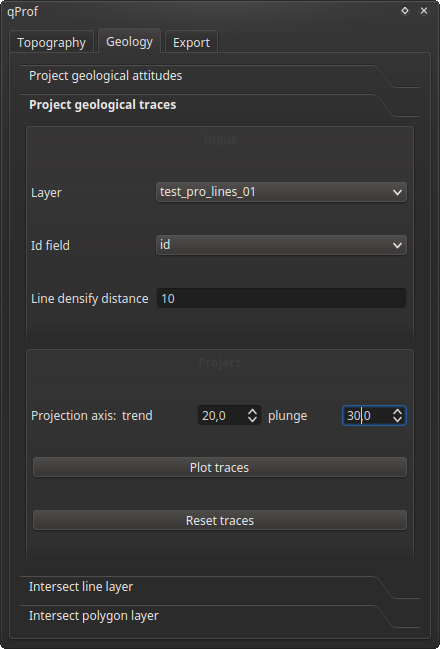
Fig. 10. The plugin interface for geological lines projections on the profile.
The "Id field" is used to label the project lines in the resulting plot, as evident in Fig. 11.
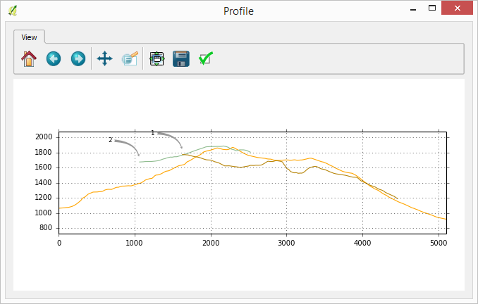
Fig. 11. Example of geological line projections on a profile in the Mt. Alpi zone (Basilicata, Southern Italy).
4. Intersections of geological elements
It is possible to determine the intersections of the profile (composed by just two points) with lines ("Intersect line layer") or with polygons ("Intersect polygon layer"), representing geological features.
With the polygon intersection tool, the colors for the resulting intersection will be chosen in an ad.hoc window.
An Id field and a Classification field can be provided, as an aid in plot visualization.
Previously created intersection can be removed by using the "Reset intersections" button.
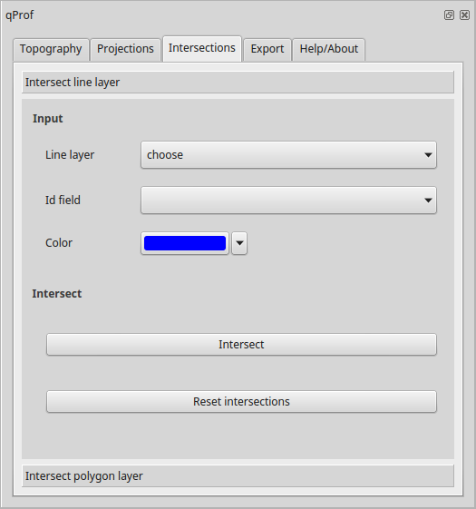
Fig. 12. Window for polygon intersection.
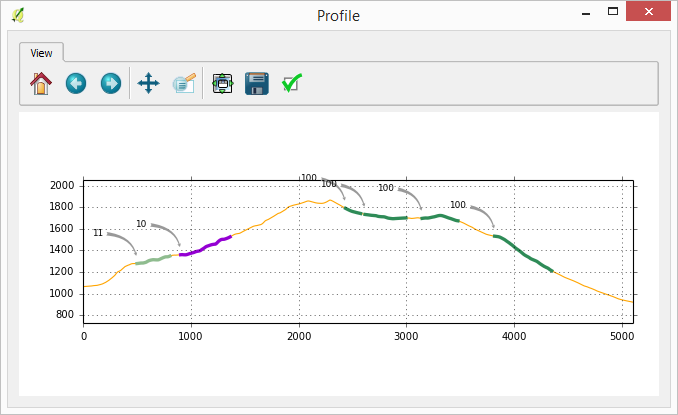
Fig. 13. Example of geological polygon intersection on a profile in the Mt. Alpi zone (Basilicata, Southern Italy).
5. Result export
The last created figure can be saved as PDF, svg or tif. The export graphic parameters can
be saved in a text file and loaded for applying them to further plots.
Result data can be exported ad point/line shapefiles and/or csv files, depending on the particular type of exported data.
The exported data will have the same CRS as the current QGis project.
Note: the slope is saved as relative (positive when upward, negative when downward), even if plotted as absolute.
To change to absolute value, apply the absolute function on the relative field in a GIS or spreadsheet software.

Fig. 14. The plugin interface for result export.